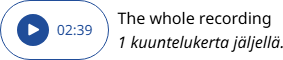
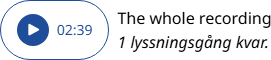
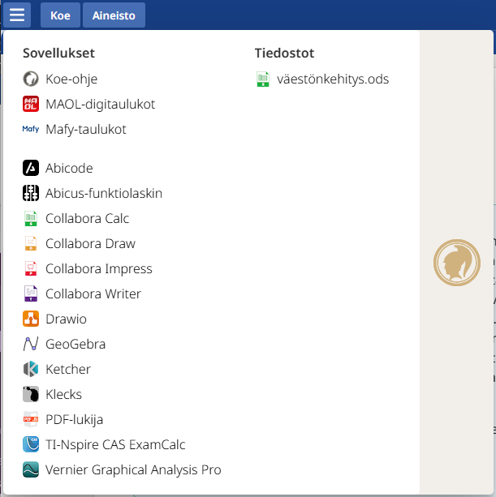
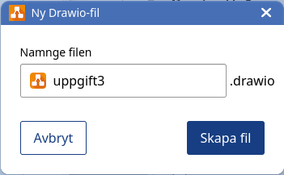

Ohjeet verkossa ja Abitissa
Instruktionerna på nätet och i Abitti
- Nämä ainekohtaiset ja yleiset ohjeet löytää verkosta osoitteessa cheat.abitti.fi.
- Dessa ämnesspecifika och allmänna instruktioner finns på nätet på adressen cheat.abitti.fi.
-
Koeympäristössä ohjeet löytyvät Valikko > Koeympäristön ohjeet
Koeympäristön ohjeet"
/>
-
I provmiljön hittas instruktionerna genom Meny > Instruktioner
Instruktioner"
/>
Yhteyden avaaminen koepalvelimelle
Öppna anslutningen till provservern
-
Käynnistä koneesi Abitti-kokelassovellus.
Starta Abitti-examinandapplikationen på din dator.
-
Syötä kokelassovellukseen koepalvelimen osoite. Saat osoitteen kokeen valvojalta.
Mata in provserverns adress i examinandapplikationen. Du får adressen av provövervakaren.
Jos kokelassovellus ei saa yhteyttä koepalvelimeen, tarkista palvelimen osoite ja että olet oikeassa verkossa.
Om examinandapplikationen inte får kontakt med provservern, kontrollera serverns adress och att du är uppkopplad till rätt
nätverk.
Kokeeseen kirjautuminen
Logga in till provet
-
Kirjoita etu- ja sukunimesi niille tarkoitettuun kohtaan.
- Tarkista, että kirjoitit nimesi oikein.
- Jos kirjoitit nimesi väärin, pyydä valvoja paikalle.
-
Kirjoita henkilötunnuksesi sille tarkoitettuun kohtaan.
- Tarkista, että kirjoitit henkilötunnuksen oikein.
- Jos kirjoitit henkilötunnuksen väärin, pyydä valvoja paikalle.
-
Järjestelmä saattaa ehdottaa sinulle suoritettavaa koetta. Tarkista, että ehdotus on oikein. Mikäli et saa
ehdotusta, valitse kokeen kieli (lukiosi opetuskieli) ja koe.
- Lue ja hyväksy koejärjestelmän käyttöehdot.
-
Odota, että valvoja tulee vahvistamaan kirjautumisesi. Odottaessa voit tarkistaa, että näytöllä näkyvät tiedot
ovat varmasti oikein.
-
Skriv ditt för- och efternamn i det fält som är avsett för detta.
- Kontrollera att du skrev ditt namn rätt.
- Be övervakaren komma om du skrev ditt namn fel.
-
Skriv in din personbeteckning i det fält som är avsett för detta.
- Kontrollera att du skrev din personbeteckning rätt.
- Be övervakaren komma om du skrev personbeteckningen fel.
-
Provsystemet kan föreslå ett prov för dig. Kontrollera att det föreslagna provet är rätt. Om du inte får ett förslag, välj då språk på provet (gymnasiets undervisningsspråk) och prov.
- Läs och godkänn provsystemets användarvillkor.
-
Vänta tills övervakaren bekräftar din inloggning. Medan du väntar kan du kontrollera att uppgifterna på skärmen
är korrekta.
Näin vastaat kokeeseen
Så här svarar du på provet
-
Merkitse vastauksesi sille varattuun tilaan. Koejärjestelmä tallentaa vastauskentässä olevat vastauksesi
automaattisesti. Vastauskentän alapuolella näkyy käyttämiesi merkkien määrä. Välilyöntejä ja rivinvaihtoja ei
lasketa mukaan merkkimäärään. Jos vastauskentän merkkimäärä on rajoitettu ja määrä ylittyy, antaa järjestelmä
virheilmoituksen.
-
Vastauksesi tallennetaan automaattisesti. Jos saat ilmoituksen vastauksen tallennuksen epäonnistumisesta,
pyydä valvoja paikalle.
-
Voit tehdä muistiinpanoja ja luonnostella vastaustasi järjestelmän ohjelmilla tai paperille kokeen aikana.
Tallenna ohjelmilla tekemäsi tiedostot säännöllisesti, jotta ne varmuuskopioidaan palvelimelle. Vastaus täytyy
kuitenkin liittää vastauskenttään, jotta se arvostellaan.
-
Koevastaukseen voi liittää erikoismerkkejä, matemaattisia kaavoja ja kuvakaappauksia. Ohjeet löytyvät alta.
-
Näin palautat aikaisemman version vastauksesta.
- Klikkaa vastausikkunan oikeassa alanurkassa näkyvää Aiemmat vastausluonnokset -linkkiä.
- Voit selailla vastausvaihtoehtoja klikkaamalla vasemmalla näkyvää valikkoa.
- Jos haluat palauttaa esikatselussa näkyvän vastausvaihtoehdon, klikkaa Palauta-nappia.
-
Käynnistä kuullunymmärtämistehtävän tallenne klikkaamalla play-painiketta (▶).
-
Jos tallenteen ääni ei kuulu, pyydä valvoja paikalle. Jos äänitteen kuuntelukertoja on rajoitettu, soittimen
oikealta puolelta näet, montako kuuntelukertaa sinulla on jäljellä.

-
Jos tallenteen kuuntelukertoja ei ole rajoitettu, voit kelata sitä vapaasti eteen- tai taaksepäin niin monta
kertaa kuin haluat. Kuuntelukerroiltaan rajoittamattoman tallenteen soittonopeutta pystyy säätämään hiiren
oikealla näppäimellä avautuvasta valikosta.
-
Jos kuuntelukerroiltaan rajoitettu äänite ei kuulu, keskeytä kokeen suorittaminen heti ja kutsu valvoja.
Selvitettyään ongelman valvoja voi vapauttaa viimeksi kuunnellun äänitteen sinulle uudelleen kuunneltavaksi.
Vanhempaa kuin edellistä äänitettä ei palauteta. Ongelman selvittämisen aikana tehtävää ei saa jatkaa.
-
Markera svaret i fältet som reserverats för det. Provsystemet sparar automatiskt dina svar i svarsfältet.
Nedanför svarsfältet ser du antalet tecken du har använt. Mellanslag och radbyten räknas inte in i
teckenantalet. Ifall svarsfältets teckenantal är begränsat får du ett felmeddelande.
-
Ditt svar sparas automatiskt. Om du får ett meddelande om att svaret inte kan sparas ska du kalla på en övervakare.
-
Du kan göra anteckningar och göra utkast på ditt svar med systemets program eller på papper under provet. Spara
de filer du skapat med programmet regelbundet så att de säkerhetskopieras till servern. Svaret måste dock fogas
till svarsfältet för att det ska kunna bedömas.
-
Det går att bifoga specialtecken, matematiska formler och skärmdumpar till provsvaren. Anvisningar finns nedan.
-
Så här återställer du en tidigare version av svaret.
- Klicka på länken Tidigare svarsutkast nere till höger i svarsfönstret.
- Du kan bläddra bland svarsalternativen genom att klicka på menyn till vänster.
- Om du vill återställa svarsalternativet som visas i förhandsgranskningen klickar du på Återställ.
-
Spela upp inspelningen i hörförståelseuppgiften genom att klicka på play (�B6;).
-
Be övervakaren komma om du inte hör ljudet av inspelningen. Om inspelningens lyssningsgånger är begränsade
ser du hur många gånger du har kvar att lyssna till höger i spelaren.

-
Om inspelningens lyssningsgånger inte är begränsade kan du fritt spola den framåt eller bakåt så många
gånger du vill. Uppspelningshastigheten för en inspelning med obegränsade lyssningsgånger kan justeras i
menyn som öppnas med höger musknapp.
-
Avbryt genast avläggandet av provet och be övervakaren komma om du inte hör en inspelning med begränsade
lyssningsgånger. Efter att ha utrett problemet kan övervakaren återställa den senast avlyssnade inspelningen så
att du kan lyssna på den igen. Äldre inspelningar än den föregående återställs inte. Du får inte fortsätta med
uppgiften medan problemet utreds.
Kuvakaappausten lisääminen
Lägga till skärmdumpar
Tekstivastauskenttiin voi lisätä kuvakaappauksia.
Du kan lägga till skärmdumpar i fältet för textsvar.
- Ota esiin se näkymä (esim. graafi tai piirros), jonka haluat liittää vastaukseen.
-
Klikkaa näytön oikean ylänurkan kamerakuvaketta:
-
Jos kuvaketta ei ole näkyvissä, käytä oman käyttöjärjestelmäsi kuvakappaukseen tarkoitettua
näppäinyhdistelmää.
- Jos et voi ottaa kuvakaappausta, ota yhteyttä valvojaan.
- Paina hiiren painike alas ja rajaa kuvakaappaukseen haluamasi osa näyttöä.
- Ota vastaus esille ja siirrä osoitin haluamaasi paikkaan tekstiä.
- Paina Ctrl ja V, jolloin kuvakaappaus liittyy vastaukseen.
- Ta fram den vy (t.ex. en graf eller teckning) som du vill lägga till i svaret.
-
Klicka på kameraikonen uppe till höger på skärmen:
- Om ikonen inte visas, använd tangentbordskombinationen för att ta en skärmdump i ditt egen operativsystem.
- Om du inte kan ta en skärmdump, kontakta övervakaren.
- Tryck ner musknappen och avgränsa skärmdumpen till önskad del av skärmen.
- Ta fram svaret och flytta pekaren till önskad plats i texten.
- Tryck på Ctrl och V för att lägga till skärmdumpen i svaret.
Matemaattisten kaavojen lisääminen
Lägga till matematiska formler
Tekstivastauskenttiin voi lisätä matemaattisia kaavoja.
Du kan lägga till matematiska formler i fältet för textsvar.
- Aktivoi vastausikkuna klikkaamalla sitä.
-
Yksittäisiä matemaattisia merkkejä voi lisätä koesivun ylälaidassa olevasta valikosta:

-
Lisää yksittäisiä matemaattisia merkkejä löydät nuolikuvakkeen takaa:

-
Varsinaisen kaavaeditorin voit avata klikkaamalla koesivun vasemmassa ylänurkassa olevaa Lisää kaava
-painiketta.
-
Kaavaa voit kirjoittaa kahdella eri tavalla.
-
Editorin vasemmalle puolelle voit lisätä kaavahahmoja koesivun yläosasta ja täyttää harmaisiin laatikoihin
merkintöjä.
- Editorin oikealla puolella voit muokata kaavaa LaTeX-kuvauskielellä.
-
Kaavaeditori pyrkii päivittämään molempia esitysmuotoja, jos toista muokataan. Jos LaTeX-esitysmuotoa ei
voida näyttää vasemmalla esimerkiksi virheellisen syntaksin mukaan, on vasen puoli valkoinen.
- Uuden kaavarivin saa painamalla rivinvaihtonäppäintä.
- Kaava "suljetaan" klikkaamalla hiirellä editorin ulkopuolella.
-
Arvostelussa näkyy suljettu sinipohjainen kaava. Jos kaavan tilalla on punainen varoituskolmio, on kaavassa
virhe.
- Aktivera svarsfönstret genom att klicka på det.
-
Enskilda matematiska tecken kan läggas till från menyn uppe på provsidan:
-
Du hittar fler enskilda matematiska tecken bakom pilikonen:
-
Du kan öppna den egentliga formeleditorn genom att klicka på Lägg till formel uppe till vänster på provsidan.
-
Du kan skriva formeln på två olika sätt.
-
Till vänster i editorn kan du lägga till formelmodeller från övre delen av sidan och fylla i markeringar i
de grå lådorna.
- Till höger i editorn kan du redigera formeln med beskrivningsspråket LaTeX.
-
Formeleditorn strävar efter att uppdatera båda formerna om den ena redigeras. Om LaTeX-formen inte visas
till vänster till exempel på grund av en felaktig syntax, är den vänstra sidan vit.
- Tryck på radbytesknappen för att få en ny formelrad.
- Formeln ”stängs” om du klickar med musen utanför editorn.
-
I bedömningen visas en sluten blåbottnad formel. Om en röd varningstriangel visas istället för formeln finns det
ett fel i formeln.
Ennen kuin aloitat kokeen
Innan du börjar provet
Tunnistautumisen jälkeen voit säätää työskentely-ympäristön sopivaksi:
Efter identifiering kan du justera arbetsmiljön så att den passar dig:
-
Valitse äänilaite ja säädä äänenvoimakkuudet sopivaksi. Löydät säädöt kokeen aikana klikkaamalla työpöydän
oikean ylänurkan hammasratakuvaketta.
-
Työpöydän ja oheisohjelmien kielivalinnan löydät klikkaamalla työpöydän oikean ylänurkan hammasratakuvaketta.
Avoinna olevien oheisohjelmien kieli vaihtuu, kun suljet ja avaat ohjelman uudelleen.
-
Välj ljudenhet och justera volymerna så att de passar dig. Under provet hittar du inställningarna genom att
klicka på kugghjulsikonen uppe till höger på skrivbordet.
-
Du hittar språkvalet för skrivbordet och programmen i provsystemet genom att klicka på kugghjulsikonen uppe till höger på
skrivbordet. Språket för öppna program ändras när du stänger och öppnar programmet igen.
Työskentely-ympäristö
Arbetsmiljö
-
Koetehtävät ja –vastaukset sekä koeaineistot sisältävät ikkunat näkyvät kaiken aikaa työpöydällä. Jos kokeessa
ei ole aineistoa, aineistoikkunaa ei näytetä.
-
Taustamateriaalit, oheisohjelmat ja omat tiedostosi löytyvät työpöydän vasemman ylänurkan sovellusvalikosta.
- Käynnistä ohjelma klikkaamalla haluamasi ohjelman kuvaketta.
-
Avaa tiedosto klikkaamalla sen kuvaketta tai tiedostonimeä.

- Sinulla voi olla samaan aikaan käynnissä useita ohjelmia.
- Näet käynnissä olevat ohjelmat näytön yläreunan sovelluspalkista.
-
Voit vaihtaa käytössä olevaa ikkunaa klikkaamalla ohjelman yläreunan sovelluspalkissa olevaa kuvaketta.
- Voit sulkea sovelluksen klikkaamalla sen ikkunan ylänurkan X-kuvaketta.
-
Ylänurkasta löytyy toiminnot ikkunan piilottamiseksi, siirtämiseksi näytön vasempaan ja oikeaan puolikkaaseen
sekä koko työpöydän kokoiseksi.
-
Voit siirtää ikkunaa ottamalla kiinni sen yläpalkista ja säätää kokoa tarttumalla hiirellä ikkunan reunoihin.
- Eri kielten vaatimia kirjaimia ja muita erikoismerkkejä voit tuottaa kahdella eri tavalla:
-
Vaihtamalla näppäimistöasettelu asetusvalikosta, johon pääset klikkaamalla oikean ylänurkan hammasrataskuvaketta.
Näppäimistöasettelujen valikoima riippuu tietokoneesi käyttöjärjestelmästä.
-
Avaamalla koeympäristön ohjeet (näytön vasemman ylänurkan kuvake > Koeympäristön ohjeet > Näppäimistö) ja
klikkaamalla haluamaasi erikoismerkkiä. Liitä merkki haluamaasi paikkaan leikepöydältä painamalla Ctrl ja V.
-
Jos poistut paikaltasi kokeen aikana esimerkiksi vessaan, kytke näytönsäästäjä päälle klikkaamalla työpöydän
oikean ylänurkan hammasrataskuvaketta > Lukitse näyttö.
-
Fönstren som innehåller provuppgifter och -svar samt provmaterial syns hela tiden på skrivbordet. Om det inte
finns material i provet visas inget materialfönster.
-
Bakgrundsmaterial, program och dina egna filer finns i programmenyn uppe till vänster på skrivbordet.
- Starta programmet genom att klicka på ikonen för önskat program.
-
Öppna filen genom att klicka på dess ikon eller filnamn.
- Du kan köra flera program samtidigt.
- Du ser vilka program som körs i programbalken upptill på skärmen.
-
Du kan växla fönster genom att klicka på ikonen i programbalken upptill på skärmen.
- Du kan stänga programmet genom att klicka på X-ikonen uppe i hörnet av fönstret.
-
I det övre hörnet hittar du funktioner för att dölja fönstret, flytta det till vänster och höger halva av
skärmen samt göra det lika stort som hela skrivbordet.
-
Du kan flytta fönstret genom att ta tag i dess övre balk och justera storleken på det genom att ta tag i fönstrets
kanter med musen.
- Du kan skapa bokstäver och andra specialtecken på olika språk på två olika sätt:
-
Genom att ändra tangentbordslayouten från inställningsmenyn, som kan nås genom att klicka på kugghjulsikonen i det övre högra hörnet.
Urvalet av tangentbordskartor beror på din dators operativsystem.
-
Öppna anvisningarna för provmiljön (ikonen uppe till vänster på skärmen > Anvisningar för provmiljön >
Tangentbord) och klicka på önskat specialtecken. Lägg tecknet på önskad plats från klippbordet genom att
trycka på Ctrl och V.
-
Om du lämnar din plats för att till exempel besöka toaletten under provet ska du starta skärmsläckaren genom att
klicka på kugghjulsikonen uppe till höger på skrivbordet > Lås skärmen.
Tiedostojen käsittely
Filhantering
Ohjeisohjelmiin (esim. Collabora, GeoGebra, Klecks) dokumentit on talletettava tiedostoiksi.
I programmen i provsystemet (t.ex. Collabora, GeoGebra, Klecks) ska dokument sparas som filer.
-
Käynnistäessäsi oheisohjelmaa sinun on annettava tiedostolle nimi. Oletusnimessä on oheisohjelman nimi ja
tämänhetkinen kellonaika.
-
Voit muuttaa tiedoston oletusnimeä haluamaksesi.
- Oheisohjelma käynnistyy, kun klikkaat "Luo tiedosto".
-
När du startar ett program i provsystemet måste du ge filen ett namn. Standardnamnet innehåller programmets namn och det aktuella klockslaget.
-
Du kan ändra filens standardnamn till vad du vill.

- Programmet startar när du klickar på "Skapa fil".
Lähes kaikki oheisohjelmat tallettavat tiedostot automaattisesti. Jos ohjelmassa ei ole automaattista tallennusta,
tallentamisesta annetaan ohje ohjelman käynnistymisen yhteydessä:

Nästan alla program i provsystemet sparar filer automatiskt. Om programmet inte har automatisk sparning ges instruktioner
om sparning när programmet startar:
Tiedostot löytyvät työpöydän vasemman ylänurkan sovellusvalikosta. Voit avata tiedoston klikkaamalla sitä:
Filerna finns i programmenyn uppe till vänster på skrivbordet. Du kan öppna filen genom att klicka på den:
Et voi poistaa tai nimetä tiedostoja uudelleen.
Du kan inte ta bort eller byta namn på filer.
Kokeen päättäminen
Avsluta provet
Tarkista, että olet vastannut kaikkiin vaadittuihin kysymyksiin.
Kontrollera att du har svarat på alla frågor som krävs.
Tarkista, että vastauskentät ovat kokonaan tyhjiä niiden kysymysten osalta, joihin et halua vastata.
Kontrollera att svarsfälten är helt tomma för de frågor som du inte vill svara på.
Jos olet palauttamassa liian monta vastausta arvosteltavaksi tai ylittämässä vastaukselle asetetun
merkkimäärärajoituksen, saat asiasta varoituksen. Varoitus näkyy tehtäväsivun navigoinnissa (esimerkki):
ja sivun alalaidassa punaisella tekstipohjalla. Esimerkki varoituksesta:

Om du returnerar för många svar för bedömning eller överskrider teckenantalsbegränsningen i svarsfältet får du en
varning. Varningen visas i uppgiftssidans navigeringsfält (exempel nedan):
och vid sidans nedre kant på rött textbotten. Exempel på varning:

Varoitus poistuu, kun tyhjennät ylimääräisen tekstivastauskentän tai lyhennät vastaustasi.
Varningen försvinner då du tömmer det överflödiga svarsfältet eller då du förkortar ditt svar.
Kun olet valmis päättämään kokeen, mene koesivun alalaitaan ja klikkaa "Siirry tarkastelemaan vastauksiasi". Tällä
sivulla voit vielä kerran varmistaa, että vastauksesi on tallentunut oikein. Päätä koe klikkaamalla tarkistussivun
alalaidassa olevaa "Päätä koe" -nappia.
När du är redo att avsluta provet, gå till nedre delen av provsidan och klicka på "Gå till att granska dina svar".
På denna sida kan du ännu en gång försäkra dig om att dina svar har sparats korrekt. Avsluta provet genom att klicka på
knappen "Avsluta provet" längst ner på granskningssidan.
Kun olet päättänyt kokeen, sammuta kokelassovellus klikkaamalla oikean ylänurkan hammasratakuvaketta ja sen
jälkeen "Sulje koejärjestelmä". (på svenska: Stäng provsystemet)
När du har avslutat provet, stäng examinandapplikationen genom att klicka på kugghjulsikonen uppe till höger och
sedan "Stäng provsystemet".
Mitä teet, kun...
Vad gör du om...
Jos tietokone toimii yllättävästi, ota heti yhteyttä valvojaan.
Om datorn fungerar på ett oväntat sätt ska du genast kontakta övervakaren.
Viittaa valvoja välittömästi paikalle, jos
Be omedelbart övervakaren komma till din plats om
- huomaat tekeväsi väärää tai vääränkielistä koetta
- du märker att du gör fel prov eller ett prov på fel språk
- et saa ääniä kuulumaan kuulokkeista
- det inte kommer ljud från hörlurarna
- et häiriön takia kuullut kuullunymmärtämistehtävän tallennetta
- du inte hörde inspelningen av hörförståelseuppgiften på grund av störning
- järjestelmä ilmoittaa, että verkkoyhteys katkeaa, eikä verkkoyhteys palaa välittömästi
- systemet meddelar att nätförbindelsen bryts och om nätförbindelsen inte genast återvänder
- koneesi lakkaa toimimasta tai kohtaat muita ongelmia tai häiriöitä
- din dator slutar fungera eller du stöter på andra problem eller störningar
...sinulla on liikaa välilehtiä
...du har för många flikar
Pyri siihen, että sinulla ei ole avoinna ylimääräisiä välilehtiä tai käynnistettyjä ohjelmia. Ne tekevät käytöstä
sekavaa ja voivat johtaa tietokoneen toimintahäiriöihin, jos tietokoneen muisti loppuu.
Sträva efter att inte har extra flikar eller startade program öppna. De gör användningen rörig och kan leda till
störningar i datorns funktion om datorns minne tar slut.
- Aktivoi suljettava ohjelma näytön yläpalkista
- Aktivera programmet du vill stänga från det övre balken på skärmen
- Jos suljet oheisohjelman ikkunan, varmista, että olet tallettanut tiedoston.
- Om du stänger programfönstret, se till att du har sparat filen.
- Sulje ikkuna sen oikeassa ylänurkassa olevasta X-napista.
- Stäng fönstret genom att klicka på X-knappen i det övre högra hörnet.
- Et voi sulkea koe- tai aineistovälilehtiä.
- Du inte kan stänga flikarna för prov eller material.
...kaavaeditorin esikatselu ilmoittaa virheestä
...förhandsgranskningen av formeleditorn meddelar om fel
Jos muokattava kaava ei näy editorin vasemmalla puolella, muokattava esikatselu ei osaa näyttää editorin oikealla
puolella olevaa LaTeX-koodia. Kokeile jotain näistä:
Om formeln som ska redigeras inte syns till vänster i editorn, kan inte den redigerbara förhandsgranskningen visa
LaTeX-koden som är till höger i editorn. Prova något av följande:
-
Sulje kaavaeditori klikkaamalla vastauskentän ulkopuolelle. Jos kaava näkyy nyt oikein, kaikki on kunnossa.
Arvostelu perustuu tähän kaavaan.
-
Stäng formeleditorn. Om formeln på blå botten är rätt, är allt i sin ordning. Bedömningen grundar sig på formeln
på blå botten.
- Voit yrittää palauttaa aiempaa toimivaa kaava Aiemmat vastausluonnokset -toiminnolla.
- Du kan försöka återställa en tidigare fungerande formel med funktionen Tidigare svarsutkast.
- Voit jatkaa kaavan muokkausta LaTeX-koodia ja katsomalla kaavaa sulkemalla sen.
- Du kan fortsätta att redigera formeln i LaTeX-koden och titta på formeln genom att stänga den.
-
Ellei mikään edellä mainituista ohjeista ratkaise ongelmaa, voit joutua aloittamaan kaavan kirjoittamisen
uudelleen.
-
Om ingen av de ovan nämnda anvisningarna löser problemet kan du bli tvungen att skriva formeln på nytt.
- Voitko kirjoittaa kaavan jollain muulla työkalulla, esimerkiksi sovelluksella?
- Kan du skriva formeln med något annat verktyg, till exempel en applikation?
...kaavaeditorilla laaditun kaavan paikalla on virheilmoitus
...ett varningsmeddelande visas i stället för formeln som skapats med formeleditorn
Jos suljetun sinipohjaisen kaavan paikalla on virheilmoitus, ei koejärjestelmä ymmärrä kaavan LaTeX-koodia eikä
kaava siksi näy arvostelussa. Kokeile jotakin näistä:
Om det finns ett varningsmeddelande i stället för en sluten formel med blått botten förstår provsystemet inte
formelns LaTeX-kod och formeln syns därför inte i bedömningen. Prova något av följande:
- Voit yrittää palauttaa aiempaa toimivaa kaavaversiota Aiemmat vastausluonnokset -toiminnolla.
-
Du kan försöka återställa en tidigare fungerande formelversion med funktionen Tidigare svarsutkast.
- Avaa kaava ja muokkaa sitä, kunnes virheilmoitus poistuu.
- Öppna formeln och redigera den tills varningsmeddelandet försvinner.
-
Ellei kumpikaan edellä mainituista ohjeista ratkaise ongelmaa, voit joutua aloittamaan kaavan kirjoittamisen
uudelleen.
-
Om ingen av de ovan nämnda anvisningarna löser problemet kan du bli tvungen att skriva formeln på nytt.
- Voitko kirjoittaa kaavan jollain muulla työkalulla, esimerkiksi sovelluksella?
- Kan du skriva formeln med något annat verktyg, till exempel en applikation?